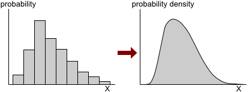
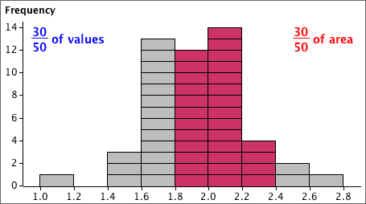
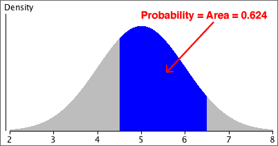
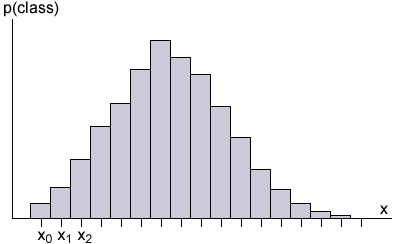
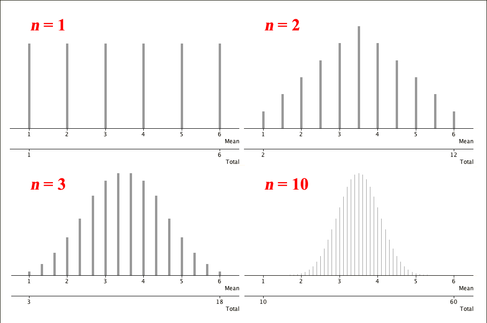

If you don't want to print now,
Definition
A discrete random variable is a function that gives a numerical value for each outcome in a sample space and whose possible values are either finite or countably infinite.
In many applications, it is possible to use a simpler definition that retains the essential features of discrete random variables.
Simpler (but less general) description
An experiment whose outcomes are numerical and whose sample space is either finite or countably infinite can be treated as a discrete random variable.
For most discrete random variables, the outcomes are whole numbers — counts of something, but the definition also includes situations where the values are not integers. For example, the proportion of successes in 10 repetitions of a simple experiment is also a discrete random variable — its possible values are {0.0, 0.1, 0.2, ..., 0.9, 1.0}.
Probability function
A discrete random variable's distribution is fully described by its probability function,
\[ P(\text{outcome } x) \;\;=\;\; P(X=x) \;\;=\;\; p(x) \]This may be described by a table of probabilities (if there is a finite number of possible outcomes) but is more often described by a mathematical formula.
From the probability function, we can find the probability of any other event relating to the random variable. For any event, \(A\),
\[ P(A) = \sum_{x \in A} p(x) \]Question: Girls in a family
A couple want at least two children and no more than four. However, subject to this constraint on their total number of children, they will stop when they get a boy.
Assuming that there are no multiple births and the probability of any child being male is \(\frac 1 2\), independent of the genders of previous children, what is the probability function for the number of girls in the family?
(Solved in full version)
In order to be a probability function, a function \(p(x)\) must satisfy a few properties:
Properties of probability functions
\[ \begin{align} &p(x) \ge 0 \text{ for all } x\\[0.4em] &\sum_{\text{all } x} p(x) = 1 \end{align} \](Proved in full version)
Cumulative probabilities
The cumulative probability for any value \(x\) is
\[P(X \le x) = \sum_{u \le x} p(u)\]The cumulative distribution function generalises this:
Definition
The cumulative distribution function (CDF) for \(X\) is the function
\[F(x) = P(X \le x) = \sum_{u \le x} p(u)\]The CDF is a step function, satisfying
\[ \begin{align} F(-\infty) &= 0\\ F(+\infty) &= 1 \end{align} \]and increasing by \(p(x)\) at each \(x\).
Question
A couple want at least two children and no more than four, but will stop when they get a boy. Assuming that the probability of each child being a girl is \(\frac {1} {2} \), independently of the genders of previous children, the probability function for the number of girls in the resulting family is
| Number of girls, x | 0 | 1 | 2 | 3 | 4 |
|---|---|---|---|---|---|
| p(x) | 0.25 | 0.5 | 0.125 | 0.0625 | 0.0625 |
Draw the cumulative distribution function for X.
(Solved in full version)
Definition
The mean of a discrete random variable, \(X\), is defined to be
\[ E[X] = \mu = \sum_{\text{all } x} {x \times p(x)} \]This corresponds closely to the definition of the mean of a discrete data set. For example, the following frequency table summarises the distribution of 600 discrete values.
| Household size x |
Frequency ƒx |
||
|
|
||
| total | 600 |
|---|
The mean of the data is
\[\begin{align} \overline{x} = \frac {\sum x} n & = \frac {\overbrace{1 + 1 + ... + 1}^{140} \; + \; \overbrace{2 + 2 + ... + 2}^{180} \; + \; \overbrace{3 + 3 + ... + 3}^{60} \; + \; ...} {600} \\ & = \frac {140 \times 1 \; + \; 180 \times 2 \; + \; 60 \times 3 \; + \; ...} {600} \\ & = \frac {140} {600} \times 1 \; + \; \frac {180} {600} \times 2 \; + \; \frac {60} {600} \times 3 \; + \; ... \\ & = \sum_{x=1}^7 {x \times \text{Propn}(x)} \\ & = 2.933 \end{align} \]If \(X\) is defined as a randomly chosen one of these 600 values, the probabilities of getting {1, ..., 7} would be their proportions in the data set and would have the same mean,
\[ \mu \;=\; \sum_{x=1}^7 {x \times p(x)} \;=\; 2.933 \]The definition of a random variable's mean can be generalised:
Definition
The expected value of a function \(g(X)\) of a discrete random variable, \(X\), is defined to be
\[ E\big[g(X)\big] = \sum_{\text{all } x} {g(x) \times p(x)} \]As with the definition of the variable's mean, this definition 'weights' the possible values, g(x), with their probabilities of arising.
The following two results make it easier to evaluate expected values.
Linear function of a random variable
If \(X\) is a discrete random variable and \(a\) and \(b\) are constants,
\[ E\big[a + b \times X\big] \;\;=\;\; a + b \times E[X] \]Sum of two functions of X
If \(X\) is a discrete random variable and \(g(X)\) and \(h(X)\) are functions of it,
\[ E\big[g(X) + h(X)\big] \;\;=\;\; E\big[g(X)\big] + E\big[h(X)\big] \](Both proved in full version)
The mean of a random variable — its expected value — summarises the centre of the distribution. We next define a summary of the spread of values around this centre.
Definition
The variance of a discrete random variable, X, is defined to be
\[ \Var (X) = \sigma^2 = E \left[(X - \mu)^2 \right] \]where \(\mu\) is the variable's mean.
As with the variance of a data set, \(s^2 = \dfrac { \sum {(x_i - \overline{x})^2}} {n-1}\), this is a kind of average of squared differences of values from the mean. The standard deviation, \(\sigma\), is the square root of the variance.
An alternative formula for the variance is usually easier to apply in practice when evaluating a random variable's variance:
Alternative formula for variance
A discrete random variable's variance can be written as
\[ \Var (X) = E \left[(X - \mu)^2 \right] = E[X^2] - \left( E[X] \right)^2 \](Proved in full version)
When the probability function is described by a mathematical function, the summations needed to find \(E[X]\) and \(E[X^2]\) can often be evaluated mathematically. However they can also be easily evaluated if the probabilities are specified in tabular form.
Question
A couple want at least two children and no more than four, but will stop when they get a boy. Assuming that the probability of each child being a girl is \(\frac {1} {2} \) , independently of the genders of previous children, the probability function for the number of girls in the resulting family is
| Number of girls, x | 0 | 1 | 2 | 3 | 4 |
|---|---|---|---|---|---|
| p(x) | 0.25 | 0.5 | 0.125 | 0.0625 | 0.0625 |
What are the mean and standard deviation of \(X\)?
(Solved in full version)
The next result gives the variance of a linear function of X.
Variance of a linear function of X
If X is a discrete random variable and a and b are constants,
\[ \Var(a + b \times X) = b^2 \times \Var(X) \](Proved in full version)
Although recorded values of a continuous variable are always rounded to some number of decimals, making the number of possible recorded values of these variables finite, the underlying measurement has an uncountable number of possible values.
Probabilities for individual values
For continuous random variables, all individual values have effectively zero probability.
Probability for a specific value of X
If a random variable, \(X\), has a continuous distribution,
\[ P(X=x) \;=\; 0 \qquad \text{for all } x \](Proved in full version)
Probabilities are still used to describe the distribution, but we need to find a way to describe the probabilities for events, such as \((2 \lt X \lt 3)\), not individual outcomes such as \((X = 2.5)\).
Probability density functions
A probability density function (pdf) is used to describe a continuous random variable's distribution. It is closely related to a histogram, but with infinitely narrow histogram classes.(It is scaled to have area one.)

A random variable's probability density function is usually a smooth function and is often described by a mathematical function,
\[f(x)\]The properties of probability density functions are fully described in a later chapter. At this stage, we just informally introduce some of the ideas.
In the histogram of a finite data set, the area above any class equals the proportion of values in the class.

Since a probability density function (pdf) is a type of histogram, it satisfies the same property.
The probability that a sampled value is within two values, P(a < X < b), equals the area under the pdf.
This is the key to interpreting pdfs.

Discrete distributions are often summarised by their mean and variance.
\[ E[X] \;=\; \mu \;=\; \sum_{\text{all } x} {x \times p(x)} \] \[ \Var (X) \;=\; \sigma^2 \;=\; E \left[(X - \mu)^2 \right] \;=\; \sum_x (x - \mu)^2 \;p(x) \]The mean and variance of a continuous distribution are similar concepts.
We will define the mean and variance as integrals later in the e-book.
However these formal definitions also correspond to a sequence of histograms whose classes become narrower. The mean and variance are the limit of what would be found from discrete variables whose possible values were in the middle of the classes.

Normal distributions are particularly important in statistics. A particular distribution from this family is specified by the values of two parameters, usually denoted by \(\mu\) and \(\sigma\).
\[ X \;\; \sim \; \; \NormalDistn(\mu,\; \sigma^2) \]Confusingly, the second parameter of the normal distribution is sometimes written "\(\sigma\)" instead of "\(\sigma^2\)". We will try to be explicit about whether \(\sigma\) or \(\sigma^2\) is intended, such as
\[ X \;\; \sim \; \; \NormalDistn(\mu=12,\; \sigma^2=5) \]Shape of a normal distribution
A normal distribution's pdf has a relatively complex formula,
\[ f(x) = \frac 1 {\sqrt{2\pi}\;\sigma} e^{\large -\frac 1{2\sigma^2} (x-\mu)^2 } \quad\quad \text{for } -\infty \lt x \lt +\infty \]The normal distribution's pdf will be treated mathematically later in the e-book.
At this point, we simply state some of its properties without proof. Its shape is determined by the values of the two parameters, \(\mu\) and \(\sigma\):
Some of these results will be proved later.
The following diagram therefore describes the pdf of any normal distribution.
Observe how the tails of the distribution fade away.
To be more precise, for all normal distributions,
The next probabilities are particularly important.
In particular, there is a 95% probability that a normally distributed random variable \(X\) is within 1.96 standard deviations of the distribution's mean.
Two events, A and B, are independent when
\[P(A \textbf{ and } B) = P(A) \times P(B) \]We extend this to define independence of two random variables, X and Y.
Definition
Two random variables, \(X\) and \(Y\), are independent if all events about the value of \(X\) are independent of all events about the value of \(Y\).
This can be simplified considerably for discrete random variables.
Independence of discrete random variables
Two discrete random variables, \(X\), and \(Y\), are independent if and only if
\[ P(X = x \textbf{ and } Y = y) \; = \; P(X=x) \times P(Y=y) \qquad \text{ for all } x \text{ and } y \]When dealing with two or more random variables, we often use subscripts to distinguish between their probability functions. Two subscripts are used when referring to the joint probabilities for the two variables,
\[ p_{X,Y}(x, y) = P(X = x \textbf{ and } Y = y) \]Discrete random variables \(X\) and \(Y\) are therefore independent when
\[ p_{X,Y}(x, y) = p_X(x) \times p_Y(y) \qquad \text{ for all } x \text{ and } y \]Proving independence
In some scenarios, we can argue that variables should be independent because of the way that the experiment was conducted. Otherwise, independence must be checked using the definition before we can be sure that two variables are independent.
To prove independence, it is necessary to show that all combinations of x and y satisfy the relationship, but it is only necessary to find a single combination that does not work to prove that X and Y are not independent.
Question
A couple want at least two children, but will stop when they either have four children or get a boy, and the probability of each child being a girl is \(\frac {1} {2} \), independently of the genders of previous children.
Are the family size, X, and the number of girls, Y, independent?
(Solved in full version)
Independent repetitions of an experiment
One important situation that leads to independent random variables is when some random experiment is repeated in essentially the same way.
If the experiment is repeated twice, it is usually reasonable to assume that the resulting two variables are not only independent, but also both have the same distribution. This allows us to dispense with the subscripts for their probability functions,
\[ p_X(\cdot) \;=\; p_Y(\cdot) \;=\; p(\cdot) \]If this is extended to \(n\) independent repetitions of a random experiment, we get \(n\) independent identically distributed random variables. These are often abbreviated to iidrv's and are also called a random sample from the distribution with probability function \(p(x)\).
Definition
A random sample of \(n\) values from a distribution is a collection of \(n\) independent random variables, each of which has this distribution.
Random samples often arise in statistics, and the following theorem is central to their analysis.
Probabilities for random samples
The probability that the values in a discrete random sample are \(x_1, x_2, ..., x_n\) is
\[ P(X_1 = x_1, X_2 = x_2, ..., X_n = x_n) \;\; = \;\; \prod_{i=1}^n p(x_i) \](Proved in full version)
Random variables defined from others
Any function of these two variables can be used to define another random variable.
\[Z =g(X, Y)\]The shape of its distribution depends on those of \(X\) and \(Y\), but we will only consider its mean and variance here.
Independent variables
We now give two results that hold provided \(X\) and \(Y\) are independent. The first result is stated without proof here, but will be used later.
Product of independent random variables
If two discrete random variables, \(X\) and \(Y\), are independent,
\[ E[XY] = E[X] \times E[Y] \](Proved in full version)
More important in practice is a linear combination of \(X\) and \(Y\),
\(Z =aX + bY\) where \(a\) and \(b\) are constants
Linear combination of independent variables
If the means of two independent discrete random variables, \(X\) and \(Y\), are \(\mu_X\) and \(\mu_Y\) and their variances are \(\sigma_X^2\) and \(\sigma_Y^2\), then the linear combination \((aX + bY)\) has mean and variance
\[ \begin {align} E[aX + bY] & = a\mu_X + b\mu_Y \\[0.4em] \Var(aX + bY) & = a^2\sigma_X^2 + b^2\sigma_Y^2 \end {align} \](Proved in full version)
Although the formula for the mean still holds if \(X\) and \(Y\) are not independent, the formula for the variance requires modification to cope with dependent random variables.
Two independent random variables
From the result on the previous page about linear functions of two independent variables,
\[\begin{align} E[X_1 + X_2] \;\;& =\;\; E[X_1] + E[X_2] \\[0.5em] \Var(X_1 + X_2) \;\;& =\;\; \Var(X_1) + \Var(X_2) \end{align} \]If \(X_1\) and \(X_2\) also have the same distributions with mean \(\mu\) and variance \(\sigma^2\), then:
\[\begin{align} E[X_1 + X_2] \;\;& =\;\; 2\mu \\ \Var(X_1 + X_2) \;\;& =\;\; 2\sigma^2 \end{align} \]Random sample
This extends to the sum of \(n\) independent identically distributed random variables — the sum of the values in a random sample.
Sum of values in a random sample
If \(\{X_1, X_2, ..., X_n\}\) is a random sample of \(n\) values from a discrete distribution with mean \(\mu\) and variance \(\sigma^2\), then the sum of the values, \(\sum_{i=1}^n {X_i}\) has mean and variance
\[\begin{align} E\left[\sum_{i=1}^n {X_i}\right] & = n\mu \\ \Var\left(\sum_{i=1}^n {X_i}\right) & = n\sigma^2 \end{align} \](Proved in full version)
Since the sample mean is simply the sum of the values divided by the constant \(n\), this result also provides us with formulae for the mean and variance of the sample mean.
Mean of a random sample
If \(\{X_1, X_2, ..., X_n\}\) is a random sample of \(n\) values from a discrete distribution with mean \(\mu\) and variance \(\sigma^2\), then the sample mean has a distribution with mean and variance
\[\begin{align} E[\overline{X}] \;\;& =\;\; \mu \\ \Var(\overline{X}) \;\;& =\;\; \frac {\sigma^2} n \end{align} \](Proved in full version)
Sum and mean of normal random sample
If \(\{X_1, X_2, ..., X_n\}\) is a random sample from a distribution with mean \(\mu\) and variance \(\sigma^2\), we have found formulae for the mean and variance of the sample mean (and of the sum of the sample values).
If the random sample comes from a normal distribution, we can also find the shapes of their distributions.
Sum and mean of a normal random sample
If \(\{X_1, X_2, ..., X_n\}\) is a random sample of \(n\) values from a \(\NormalDistn(\mu, \;\sigma^2)\) distribution,
\[\begin{align} \sum_{i=1}^n {X_i} & \;\; \sim \;\; \NormalDistn(n\mu, \;\sigma_{\Sigma X}^2=n\sigma^2) \\ \overline{X} & \;\; \sim \; \; \NormalDistn(\mu, \;\sigma_{\overline X}^2=\frac {\sigma^2} n) \end{align} \]Samples from other distributions
Whatever the shape of the distribution from which the random sample is selected from, the sample sum and mean are approximately normal when the sample size is large.
Central Limit Theorem (informal)
If \(\{X_1, X_2, ..., X_n\}\) is a random sample of \(n\) values from any distribution with mean \(\mu\) and variance \(\sigma^2\),
\[\begin{align} \sum_{i=1}^n {X_i} & \;\; \xrightarrow[n \rightarrow \infty]{} \;\; \NormalDistn(n\mu, \;\;\sigma_{\Sigma X}^2=n\sigma^2) \\ \overline{X} & \;\; \xrightarrow[n \rightarrow \infty]{} \; \; \NormalDistn(\mu, \;\;\sigma_{\overline X}^2=\frac {\sigma^2} n) \end{align} \]This way of writing the Central Limit Theorem describes how it is interpreted in practice, but the following is a more precise statement of the result.
Central Limit Theorem (more precise)
If \(\{X_1, X_2, ..., X_n\}\) is a random sample of \(n\) values from any distribution with mean \(\mu\) and variance \(\sigma^2\),
\[ Z_n = \frac {\sum_{i=1}^n {X_i} - n\mu} {\sqrt{n}\; \sigma} \quad \xrightarrow[n \rightarrow \infty]{} \quad \NormalDistn(0,\; 1) \]The Central Limit Theorem is the main reason why the normal distribution is so important in statistics. Sample means are approximately normal, whatever the distribution from which the values are sampled. Many other summary statistics from large random samples also have approximately normal distributions.
Equally likely values
A uniform distribution arises when each integer value between two limits has the same chance of being observed — equally likely outcomes.
Definition
If a discrete random variable, \(X\), can only take integer values from \(a\) to \(b\), where \(a\) and \(b\) are integer constants, and each such value is equally likely, it is said to have a discrete uniform distribution.
\[ X \;\; \sim \; \; \UniformDistn(a, b) \]Probability function
Since there are \((b-a+1)\) equally likely values between \(a\) and \(b\) (inclusive),
\[ p(x) = \begin {cases} \displaystyle \frac 1 {b-a+1} & \quad \text{if } a \le x \le b \\[0.5em] 0 & \quad \text{otherwise} \end {cases} \]If the probabilities are displayed graphically in a bar chart, each bar has the same height.

Since a uniform distribution's probability function is defined by a mathematical function (as opposed to a list of values), we can find its mean and variance by summing series.
Uniform distribution's mean and variance
If \(X \sim \UniformDistn(a, b) \), its mean and variance are
\[ \begin {align} E[X] & = \frac {a+b} 2 \\ \Var(X) & = \frac { (b - a + 1)^2 - 1} {12} \end {align} \](Proved in full version)
The general results about the distribution of means of random samples can be applied to the uniform distribution. If \(\overline{X}\) is the mean of a random sample of \(n\) values from a \(\UniformDistn(a, b)\) distribution,
\[\begin{align} E[\overline{X}] & \;=\; E[X] \;=\; \frac{a+b} 2 \\[0.3em] \Var(\overline{X}) & \;=\; \frac {\Var(X)} n \;=\; \frac{ (b - a + 1)^2 - 1} {12n} \end{align} \]Example: Rolling a six-sided die
If \(X \sim \UniformDistn(1, 6)\),
\[\begin{align} E[X] & = \frac{1+6} 2 = 3.5 \\ \Var(X) & = \frac{ (6 - 1 + 1)^2 - 1} {12} = \frac {35} {12} = 2.917 \end{align} \]so for the average of a sample of size \(n\),
\[ \begin{align} E[\overline{X}] &= E[X] = 3.5 \\[0.4em] \Var(\overline{X}) &= \frac {\Var(X)} n = \frac {2.917} n \end{align} \]The barcharts below show the distribution of \(\overline{X}\) for a few sample sizes.

This illustrates that:
The limiting normal distribution should be expected from the Central Limit Theorem.
What you need to know in this chapter
You should concentrate on the following material when studying the chapter about random variables.
2.1 Discrete random variables
The distinction between discrete and continuous random variables is central to the course, so you must be able to identify which is relevant to any scenario. The idea of a probability function and its properties should be understood (2.1.1). From any probability function, you should be able to find any probability, including cumulative probabilities, by summing its probability function (2.1.2).
You should also be able to find the mean and variance for a discrete random variable described by a table of probabilities or the mathematical formula for its probability function (2.1.3 and 2.1.5). You should also be able to use the results in page 2.1.4 to find other expected values and prove the alternative formula for the variance.
2.2 Continuous random variables
This section is a brief introduction to continuous random variables that is only used to introduce the normal distribution here. (Chapter 5 goes into a lot more detail.) At this point, you only need to understand how a probability density function describes a continuous random variable's probabilities as areas under it (2.2.1-2), and know that a variable's mean and variance are interpreted in a similar way to those of a discrete random variable (2.2.3).
From 100-level statistics, you should already know how the shape of the normal distribution depends on its parameters μ and σ² and be able to find probabilities for specific normal random distributions.
2.3 Discrete random samples
You should understand the concept of two or more independent discrete random variables and its precise definition (2.3.1-2) and be able to derive the formulae for the mean and variance of (aX+bY) when X and Y are independent (2.3.3).
You should also be able to derive the formulae for the mean and variance of the sum and mean of the values in a random sample (2.3.4), and know that the Central Limit Theorem justifies their approximately normal distribution in large samples (2.3.5).
2.4 Uniform distribution
The discrete uniform distribution is mainly introduced here as a simple example to illustrate the earlier results. You will not be asked to derive the formulae for its mean and variance but could be asked to find probabilities about the mean of a random sample, using a normal approximation based on the Central Limit Theorem.